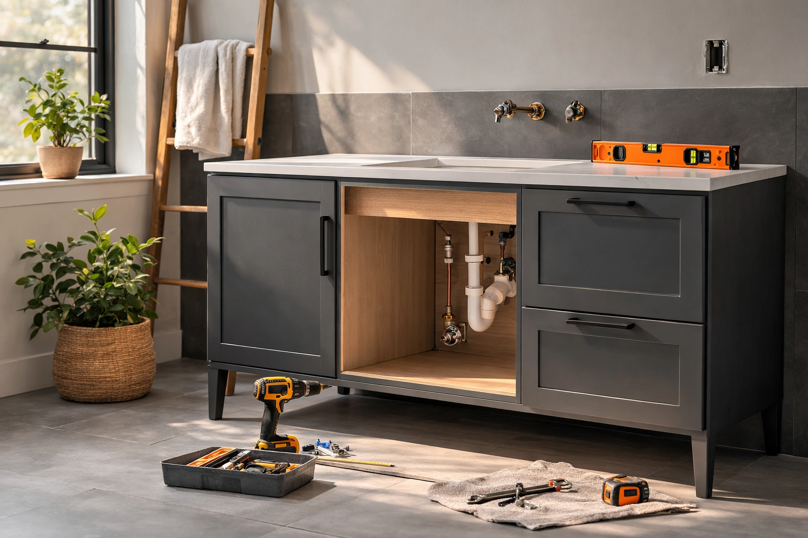

How to Install a Bathroom Vanity: Complete DIY Guide

Home Improvement Writer — Bathroom renovation and DIY installation expert
This article contains affiliate links. If you purchase through these links, we may earn a small commission at no extra cost to you. Full disclosure.
Quick Answer: Can You Install a Vanity Yourself?
Yes. Most homeowners can replace an existing bathroom vanity in 2-4 hours with basic tools. You will need a wrench, level, drill, and stud finder. The job involves disconnecting plumbing, removing the old unit, positioning and securing the new vanity, and reconnecting water lines. If you are adding a vanity where none existed before, hire a plumber for the rough-in plumbing.

Installing a new bathroom vanity is one of the most impactful upgrades you can make, and it does not require a contractor. Whether your existing vanity is outdated, damaged, or simply too small, a replacement can transform the look and functionality of your entire bathroom.
The average professional installation costs $200 to $500 in labor alone. But with the right tools and a clear plan, you can handle this project yourself and save that money for a better vanity. Thousands of homeowners complete vanity installations every weekend, and the plumbing connections are simpler than most people expect.
In this guide, we walk through every step: removing your old vanity, installing a floating bathroom vanity or freestanding unit, connecting the plumbing, and avoiding the mistakes that lead to leaks and crooked cabinets. If you are still deciding which vanity to buy, start with our complete vanity buying guide or browse the best bathroom vanities of 2026.
This guide covers vanities ranging from $219.99 to $299.99, with options for every bathroom size and style. Every product recommended has been verified for build quality and ease of DIY installation.

LUXOAK 31" Farmhouse Vanity with Sink
Freestanding design with pre-drilled holes and included sink. Barn door front adds farmhouse charm. Most buyers report a 2-hour installation.
Check Price on Amazon


Before You Start: Planning Your Vanity Installation
A successful vanity installation starts well before you pick up a wrench. Taking 30 minutes to plan and measure will save you hours of frustration and prevent costly mistakes.
Measuring Your Space
Before ordering a new vanity, measure three things precisely:
- Width: Measure the available wall space from wall to wall, or from wall to any obstruction (toilet, door swing, tub). Leave at least 2 inches of clearance on each side for a clean look.
- Depth: Measure from the back wall to the point where the vanity front should end. Standard vanities are 18-21 inches deep. In tight bathrooms, a small bathroom vanity (16-18 inches deep) may work better.
- Height: Standard vanity height is 30-32 inches. Comfort-height vanities (34-36 inches) are increasingly popular and easier on your back. Wall-mounted vanities let you choose any height.
Locating Your Plumbing Rough-In
Your bathroom's plumbing rough-in determines where the vanity can go. You need to identify three connection points:
- Supply lines: Two shut-off valves (hot and cold) typically emerge from the wall 18-20 inches above the floor.
- Drain pipe: The drain stub-out usually sits 16-18 inches above the floor and is centered in the vanity width.
- P-trap clearance: Make sure the new vanity's interior dimensions accommodate the P-trap without kinking the drain line.
Freestanding vs. Wall-Mounted: Which Should You Install?
Your installation approach depends on which type of vanity you choose. Here is a quick comparison:
- Freestanding vanities sit on the floor and are screwed to the wall for stability. They are easier to install, hide plumbing behind the cabinet, and work with any floor type. Best for DIY beginners.
- Wall-mounted (floating) vanities are attached to the wall with brackets and do not touch the floor. They look modern, make floor cleaning easy, and create an illusion of space. However, they require anchoring into wall studs and the plumbing connections are more visible. See our best floating vanities for top picks.
Tools and Materials Checklist
Gather everything before you start. Nothing is worse than making a trip to the hardware store with disconnected plumbing and no running water.
Tools You Will Need
- Adjustable wrench (2): One to hold the fitting, one to turn the nut. Channel-lock pliers work as a substitute.
- Level (24-inch or longer): Essential for ensuring the vanity is perfectly level. A laser level is even better.
- Drill/driver: For driving screws into wall studs. A cordless drill with a Phillips bit is ideal.
- Stud finder: Critical for wall-mounted vanities, important for all vanities. You need to screw into studs, not just drywall.
- Tape measure: For measuring the rough-in distances, vanity placement, and centering.
- Utility knife: For cutting through old caulk lines between the vanity and wall.
- Bucket and towels: Water will spill when you disconnect plumbing. Be ready.
- Caulk gun: For applying silicone caulk at the wall-vanity junction and around the countertop.
- Jigsaw or hole saw: Only needed if you must cut holes in the vanity back panel for plumbing access.
Materials You Will Need
- Silicone caulk (kitchen/bath grade): Clear or white. Do not use acrylic caulk in wet areas.
- Plumber's tape (Teflon tape): Wrap around threaded connections to prevent leaks.
- Wood shims: For leveling the vanity on uneven floors.
- New supply lines (braided stainless steel): Replace old supply lines if they are corroded or too short. Costs $5-10 per line.
- Wall screws (2.5-3 inch): For securing the vanity to wall studs.
- Spackle and sandpaper: For patching wall damage from the old vanity.
How to Remove Your Old Vanity
Removing the old vanity is usually the hardest part of the job, not because it is complicated, but because old caulk and corroded fittings do not want to cooperate. Budget 45-60 minutes for removal.
Step 1: Shut Off the Water Supply
Locate the two shut-off valves beneath the vanity (hot on the left, cold on the right). Turn them clockwise until fully closed. Then open the faucet to release any remaining water pressure and drain the lines into the sink.
If the shut-off valves do not fully stop the water (common in older homes), you will need to shut off the main water supply to the house. Test by opening the faucet after closing the valves. If water still flows, go to the main valve.
Step 2: Disconnect the Plumbing
Place a bucket directly under the P-trap. Disconnect the supply lines from the faucet using an adjustable wrench. Then remove the P-trap by loosening the slip nuts on both ends. Some water will drain into the bucket.
If you plan to reuse the faucet, remove it from the countertop now. Unscrew the mounting nuts from below and lift the faucet assembly out.
Step 3: Remove the Vanity Cabinet
Use a utility knife to cut through the caulk bead between the vanity and the wall. Next, open the vanity doors or drawers and look for screws along the back rail that secure the cabinet to the wall. Remove these screws with a drill.
If the countertop is separate from the cabinet, remove it first. It may be glued down with adhesive; use a pry bar gently to break the bond. Then pull the cabinet away from the wall.
Step 4: Patch the Wall and Floor
Remove any remaining caulk residue from the wall. Fill screw holes and any wall damage with spackle. Let it dry, then sand smooth. If the old vanity was a different size than the new one, you may need to touch up paint on the exposed wall area.
Check the floor for damage or unevenness. If the old vanity sat on top of the finished floor, the new vanity should too. If the old vanity was installed before the flooring, you may have a gap to address.
How to Install a Freestanding Vanity
Freestanding vanities are the most common type and the easiest to install. If you are a first-time DIYer, this is the best option. The process is straightforward: position, level, secure, and connect.
Step 1: Position the Vanity
Slide the vanity into place against the wall. Center it over the plumbing rough-in. The drain and supply lines should be accessible through the back panel of the vanity. Many vanities come with pre-cut or perforated holes in the back panel. If yours does not, measure and cut openings with a jigsaw.
Step 2: Check for Level
Place a level on top of the vanity, checking both side-to-side and front-to-back. Bathroom floors are rarely perfectly level, so expect to make adjustments. Use a pencil to mark the wall at the top of the vanity once you have it positioned correctly.
Step 3: Shim as Needed
Slide wood shims under the base of the vanity at the low spots until the bubble on the level is centered. Do not rush this step. A vanity that is not level will have a countertop that pools water and drawers that do not open properly. Once level, trim the shims flush with the vanity base using a utility knife.
Step 4: Secure to the Wall
Use a stud finder to locate the wall studs behind the vanity. Mark their positions. Drive 2.5-3 inch screws through the vanity's back rail (the horizontal board at the top back of the cabinet) into at least two wall studs. Most vanities have a pre-drilled back rail for this purpose.
If you need to choose vanities that are the right size for your space, our guide to best vanities under $500 covers the most popular dimensions.
Step 5: Install the Countertop and Sink
Apply a continuous bead of silicone caulk along the top edges of the vanity cabinet. Carefully set the countertop in place and press down firmly. Check that it is centered and flush with the back wall. If your vanity came with an integrated sink (most budget and mid-range models do), the sink is already part of the countertop.
Install the faucet and drain assembly according to the manufacturer's instructions. It is usually easier to install the faucet onto the countertop before setting the countertop on the vanity.
Step 6: Caulk and Finish
Run a thin bead of silicone caulk where the vanity meets the wall and along the backsplash edge of the countertop. Smooth the caulk with a wet fingertip for a clean, professional look. Allow 24 hours for the caulk to fully cure before using the sink.
How to Install a Floating (Wall-Mounted) Vanity
Floating vanities create a sleek, modern look and make floor cleaning easy. However, they require more precise installation because the wall bears all the weight. If you are looking for models, check our best modern vanities roundup.
Step 1: Find and Mark the Wall Studs
This is the most critical step. Use a stud finder to locate every stud in the installation area. Mark them clearly with painter's tape. You need to hit at least two studs with the mounting bracket. Wall-mounted vanities typically weigh 50-100 pounds before you add water, so drywall anchors alone are not sufficient.
Step 2: Install the Mounting Bracket
Most floating vanities include a wall-mount bracket, cleat, or French cleat system. Hold the bracket against the wall at the desired height (typically 30-34 inches from the floor to the top of the vanity). Use a level to ensure the bracket is perfectly horizontal, then mark the screw holes.
Pre-drill pilot holes into the studs. Drive lag screws (usually 3 inches long, included with the vanity) through the bracket into the studs. Tug firmly on the bracket to confirm it is secure before hanging the vanity.
Step 3: Hang the Vanity
With the bracket securely mounted, lift the vanity and hook it onto the bracket. This step is easier with two people. Check for level again once the vanity is hanging. Some floating vanities have adjustable screws that allow you to fine-tune the level after hanging.
Once level, secure the vanity to the bracket with the provided hardware. Some models require additional screws through the bottom or sides of the cabinet into the wall.
Step 4: Connect the Plumbing and Finish
With a floating vanity, the plumbing connections are often partially visible below the cabinet. Use chrome or brushed nickel supply lines and a decorative P-trap for a polished look. Connect the supply lines, reassemble the P-trap, install the countertop, and caulk all edges as described in the freestanding section above.
Plumbing Connections Explained
Plumbing is the part of vanity installation that intimidates most DIYers, but it is more straightforward than it looks. If you are replacing a vanity in the same location, the connections are almost always a direct swap.
Supply Lines
The supply lines carry water from the shut-off valves to your faucet. Modern braided stainless steel supply lines are flexible and come in standard lengths (12, 16, 20, and 24 inches). Here is how to connect them:
- Wrap 3-4 turns of Teflon tape clockwise around the threaded end of each shut-off valve.
- Hand-tighten the supply line fitting onto the valve, then use a wrench to tighten an additional quarter turn. Do not overtighten, as this can crack the fitting.
- Connect the other end of each supply line to the faucet's hot and cold inlets. Hot is always on the left (when facing the vanity).
P-Trap and Drain Connection
The P-trap is the U-shaped pipe under the sink that prevents sewer gases from entering your bathroom. It connects the sink's drain tailpiece to the wall drain stub-out.
- Attach the tailpiece (the vertical pipe extending down from the sink drain) if not already installed.
- Assemble the P-trap by connecting the trap arm to the wall stub-out and the trap bend to the tailpiece. Use slip nuts and washers at each connection. Hand-tighten first, then snug with pliers.
- Ensure the trap arm slopes slightly downward toward the wall (about 1/4 inch per foot) for proper drainage.
Leak Check
This is the most important step in the entire installation. Turn on the water supply valves slowly. Check every connection point for leaks:
- Both shut-off valve connections
- Both faucet inlet connections
- The drain tailpiece connection
- Both P-trap slip nut connections
- The faucet base and handles
Run the water for a full 5 minutes and check again. Some leaks only appear under sustained water pressure. Place a paper towel under each connection; it will reveal even the smallest drip.
Common Installation Mistakes to Avoid
After reviewing hundreds of vanity installation projects and customer reviews, here are the eight most common mistakes that lead to leaks, damage, or an unprofessional result.
1. Not Checking for Level
An unlevel vanity causes water to pool on the countertop, drawers to swing open or closed on their own, and the vanity to look crooked against the wall. Always check level in both directions and use shims to correct.
2. Skipping the Stud Finder
Screwing into drywall alone is the number one cause of vanity pull-away from the wall. Freestanding vanities can gradually separate, and wall-mounted vanities can fall entirely. Always secure into studs.
3. Overtightening Plumbing Connections
More force does not mean a better seal. Overtightening plastic slip nuts cracks them. Overtightening supply line fittings strips the threads. Hand-tight plus a quarter turn with a wrench is usually sufficient.
4. Forgetting to Replace Supply Lines
Old rubber supply lines become brittle and are the leading cause of residential water damage. Every vanity replacement is an opportunity to install new braided stainless steel lines. The $20 investment can prevent thousands in flood damage.
5. Using Acrylic Caulk Instead of Silicone
Acrylic caulk (painter's caulk) breaks down when exposed to moisture. In a bathroom environment, it will crack, peel, and allow water to seep behind the vanity within months. Always use 100% silicone caulk rated for kitchen and bath use.
6. Not Measuring the Rough-In Before Buying
If your new vanity is narrower than the old one, the plumbing connections may not align with the vanity's interior. Measure the position of your drain and supply lines, and compare those measurements to the new vanity's internal dimensions before purchasing.
7. Installing the Countertop Before the Faucet
It is much easier to install the faucet and drain assembly onto the countertop while the countertop is on the floor or a workbench. Once the countertop is on the vanity, working from underneath in a cramped cabinet is difficult and awkward.
8. Ignoring Water Damage Behind the Old Vanity
When you remove the old vanity, inspect the wall and floor carefully. Water stains, soft drywall, or musty odors indicate moisture damage. Address these issues before installing the new vanity, or you risk trapping mold and rot behind the new unit.
Best Vanities for Easy DIY Installation
Not all vanities are created equal when it comes to installation difficulty. These three picks are specifically selected for their DIY-friendly design, clear instructions, and included hardware. Looking for more options? Browse our full roundup of farmhouse vanities or compare single vs double sink configurations.
1. LUXOAK 31" Farmhouse Sliding Barn Door Bathroom Vanity with Sink
Best For: First-time DIYers who want a vanity with included sink and pre-drilled mounting holes
- Includes ceramic sink and faucet holes pre-drilled
- Sliding barn door conceals storage without swing clearance
- 31-inch width fits most standard bathroom rough-ins
- Distressed white finish with solid wood frame
- Back panel pre-cut for plumbing access
Pros
- Sink included saves buying separately
- Pre-cut back panel eliminates jigsaw work
- Barn door does not need swing clearance
- Solid construction with adjustable shelf
Cons
- Faucet not included
- Limited color options
The LUXOAK is our top pick for DIY installation because it removes the most common friction points. The sink is integrated, the back panel is pre-cut for standard plumbing rough-ins, and the mounting hardware is included. Most reviewers report completing installation in under 2 hours.
The sliding barn door is a practical design choice, not just an aesthetic one. It eliminates the need for door swing clearance, making this vanity work in tight bathrooms where a traditional door would hit the toilet or tub.
Check Price on Amazon
2. AMERLIFE 31" Farmhouse Bathroom Vanity with Sink
Best For: Homeowners who want farmhouse style with solid construction at a mid-range price
- Includes ceramic drop-in sink
- Sliding barn door with smooth rolling hardware
- Antique white distressed finish
- Interior adjustable shelf for flexible storage
- Standard 31-inch width with back panel cutout
Pros
- $20 less than comparable LUXOAK model
- Smooth barn door sliding mechanism
- Sturdy MDF and solid wood construction
- Sink and drain included
Cons
- Assembly instructions could be clearer
- Faucet sold separately
The AMERLIFE offers nearly identical features to the LUXOAK at a $20 savings. The barn door hardware rolls smoothly, and the antique white finish adds authentic farmhouse character. The included sink and pre-cut back panel make installation straightforward.
Reviewers consistently praise the build quality relative to the price point. The adjustable interior shelf lets you customize storage for tall bottles or stacked towels. A solid mid-range choice for DIY installation.
Check Price on Amazon


3. YOURLITE 36" Rustic Farmhouse Bathroom Vanity with Vessel Sink
Best For: Budget-conscious renovators who want maximum counter space and rustic style
- 36-inch width provides more counter and storage space
- Includes white ceramic vessel sink
- Rustic farmhouse design with open shelf
- Solid wood frame with water-resistant finish
- Open-back design simplifies plumbing access
Pros
- Lowest price of our top picks
- 36-inch width offers generous workspace
- Open back makes plumbing connections easy
- Vessel sink creates a modern-rustic look
Cons
- Open shelf leaves items visible
- Vessel sink sits higher than traditional sinks
The YOURLITE delivers the most square inches per dollar in our comparison. At 36 inches wide, it provides significantly more counter space than the 31-inch models, and the open-back design means zero jigsaw work during installation. You simply slide it into place and connect the plumbing.
The vessel sink sits on top of the counter, creating a statement piece. Keep in mind that this raises the effective sink height by 4-5 inches compared to a drop-in sink, so measure accordingly. The open lower shelf is great for baskets or towels but does not hide clutter the way a doored cabinet does.
Check Price on Amazon


Quick Comparison: Best Vanities for DIY Installation
| Vanity | Size | Best For | Rating | Price |
|---|---|---|---|---|
| LUXOAK Farmhouse | 31" | Easiest install | 4.3/5 | $299.99 |
| AMERLIFE Farmhouse | 31" | Best value | 4.3/5 | $279.99 |
| YOURLITE Rustic | 36" | Budget pick | 4.1/5 | $219.99 |
Frequently Asked Questions About Bathroom Vanity Installation
Q: How much does it cost to install a bathroom vanity yourself?
A DIY bathroom vanity installation typically costs $0 to $50 in supplies (caulk, shims, Teflon tape, and possibly new supply lines). The vanity itself is your main expense. Professional installation from a handyman or plumber ranges from $200 to $500 depending on complexity, your location, and whether plumbing modifications are needed. By doing it yourself, you save the full labor cost.
Q: Can I install a bathroom vanity without a plumber?
Yes, if you are replacing an existing vanity in the same location. The supply lines and drain connections remain in the same positions, so it is a direct swap. You do not need special plumbing skills, just a wrench and some Teflon tape. However, if you are moving the vanity to a new location, installing where no vanity existed before, or need to relocate the drain pipe inside the wall, you should hire a licensed plumber for the rough-in work.
Q: How long does it take to install a bathroom vanity?
A straightforward vanity replacement (removing the old one and installing the new one in the same location) takes 2 to 4 hours for someone with basic DIY skills. A full new installation that includes patching walls, modifying plumbing, or dealing with uneven floors can take a full day (6 to 8 hours). Wall-mounted vanities generally take 30-60 minutes longer than freestanding models due to the bracket installation.
Q: Do I need to remove the vanity to replace the countertop?
Not always. If the new countertop is the same dimensions as the old one, you can often disconnect the plumbing, lift off the old countertop, and set the new one in place without moving the cabinet. The countertop is typically held in place by adhesive or clips, not by the vanity structure itself. However, if the new countertop is a different size or requires a different sink cutout, you may need to adjust or replace the vanity cabinet as well.
Q: How do I install a floating vanity on drywall?
You must anchor a floating vanity into wall studs, not just drywall. Drywall alone cannot support the weight of a loaded vanity (which can exceed 100 pounds with water running). Use a stud finder to locate studs, then install the mounting bracket or cleat with lag screws driven directly into the studs. If the studs do not align with the bracket holes, install a horizontal blocking board (a 2x6 or 2x8 secured to two studs) as a mounting surface. Never rely on drywall anchors alone for a wall-mounted vanity.